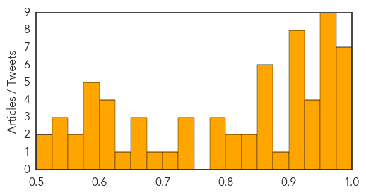

Unknown
30-Day Web Trend
0 alerts, 0 warnings

30-Day Twitter Trend
2 alerts, 0 warnings

Article Locations


Article Confidences
Top Articles:
- 0.997
- The Rocky Mount Telegram
- 0.995
- CDC Report: Only 23 percent of Flu Vaccine Showing Good Results
- 0.993
- Officials: Indiana flu season rated “severe”
- 0.990
- Two more flu-related deaths as cases continue to fall in Dallas County
- 0.989
- Officials: Indiana flu season rated “severe”
- 0.987
- Flu Shot 77 Percent Ineffective This Year
- 0.979
- Flu vaccine only 23% effective
- 0.975
- CDC: Flu shot not as effective this season
- 0.975
- CDC: Flu shot not as effective this season
- 0.970
- Flu Season 2014-2015: Current Vaccine Shot Only 23 Percent Effective, CDC Warns : US News : Latin Post
- 0.968
- KC children's hospital reports 2 flu deaths
- 0.965
- Enterovirus D68 seen in cancer, stem cell transplant patients
- 0.963
- Opryland outbreak may be Norovirus
- 0.959
- Two Children’s Mercy patients die of flu
- 0.958
- Flu Closes Schools, Flusters Hospitals Nationwide
- 0.955
- Woman dies of bird flu in Egypt's Assiut
- 0.946
- Woman dies of bird flu in Egypt, third death this year
- 0.942
- As Flu Deaths Rise In Kentucky, Schools Take Precautions - LEX18.com
- 0.935
- Health officials encourage vaccines as flu season continues
- 0.928
- CDC: Flu Shot Only 23% Effective - Story
- 0.917
- Chicago Tribune
- 0.917
- Chicago Tribune
- 0.917
- Chicago Tribune
- 0.917
- Chicago Tribune
- 0.917
- Chicago Tribune
- 0.917
- Chicago Tribune
- 0.910
- The world windows to Thailand
- 0.907
- Rare Virus Discovered in Common Tick
- 0.883
- Avian Flu Outbreak Feared. Taiwan Kills 160,000 Birds
- 0.874
- 'We’re Testing About 20 People a Day': Inside the Cambodian Village Devastated by an HIV Outbreak
- 0.872
- Hospitals Lower Health Care-Associated Infections
- 0.866
- AFP photographer wounded in Charlie Hebdo clashes in Karachi
- 0.866
- Russia regrets Ukraine's move to rotate troops in east
- 0.866
- Toledo school closed for cleaning amid flu-like illnesses
- 0.863
- Colds, flu spreading across western Massachusetts
- 0.834
- WHO sounds alarm on Ukraine's creaking health system
- 0.832
- Almost 1.5 Mln Need Humanitarian Assistance in Eastern Ukraine, WHO Reports
- 0.814
- Flu threat poses a new test for Varadkar
- 0.810
- WHO Sounds Alarm on Ukraine's Creaking Health System — Naharnet
- 0.794
- China Panda Virus Kills Two Pandas, Leaves Third In Critical Condition
- 0.789
- Jimmy Carter is about to end Guinea worm disease
- 0.783
- Major floods in Malawi, Mozambique force thousands to flee their homes – UN - Malawi
- 0.734
- What's Going Around: strep throat and upper respiratory infectio
- 0.727
- International aid for flood stricken Mozambique and Malawi
- 0.725
- Hope for universal flu vaccine within 5 years: study
- 0.725
- The World On Arirang
- 0.688
- Malaysia General Business Sports and Lifestyle News
- 0.672
- Local officials push for HPV Vaccinations
- 0.668
- Questions and answers about Sri Lanka mystery kidney disease
- 0.656
- Two die of H7N9 bird flu in China's Fujian
Showing top 50 articles...
Top Tweets:
-
No tweets found for Jan 16, 2015